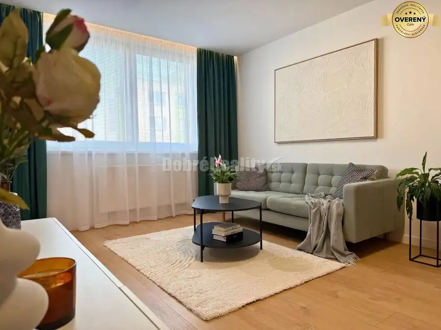
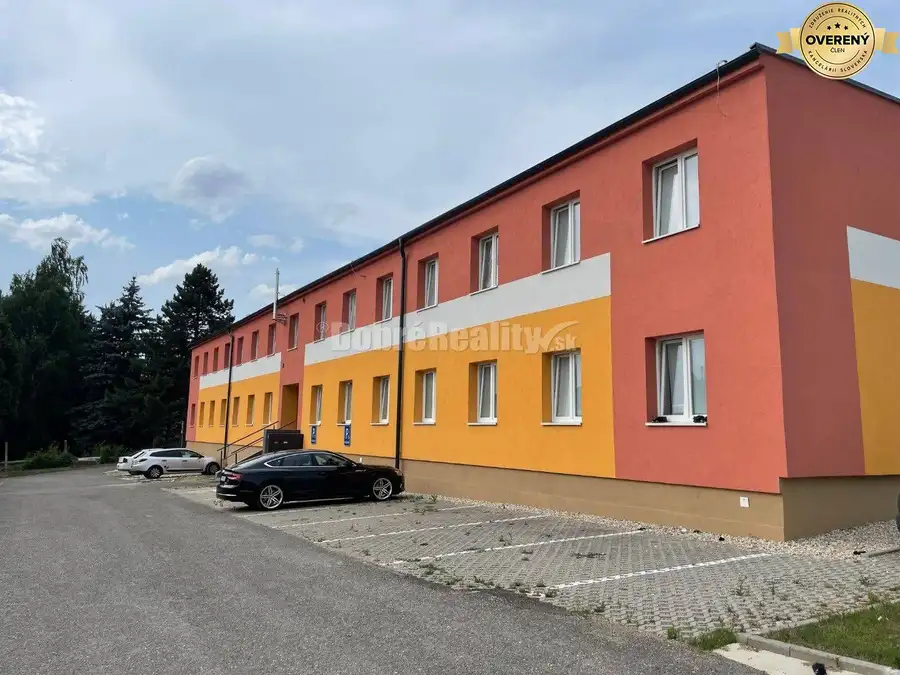

PRIESTRANNÝ 3-izbový byt na Zapotôčkach – Vytvorte si domov podľa vlas
Prievidza
- Dispozícia3-izbový
- Plocha72 m²
- Poschodie7. z 4
- Stavpôvodný
O nehnuteľnosti
DOBRÉ REALITY ponúkame na predaj 3-izbový byt s vynikajúcou rozlohou 72 m², nachádzajúci sa v jednej z najžiadanejších častí Prievidze – na sídlisku Zapotôčky. Byt je v pôvodnom, ale zachovalom stave, čo predstavuje ideálnu príležitosť pre tých, ktorí sa nechcú prispôsobovať cudzím vkusom a túžia po rekonštrukcii presne podľa svojich snov.
Prečo si vybrať práve tento byt?
Veľkorysá plocha: 72 m² ponúka priestranné izby a logickú dispozíciu, ktorú moderná rekonštrukcia dokáže zmeniť na luxusné bývanie.
Pôvodný stav = Vaša výhoda: Neplatíte za cudziu rekonštrukciu. Vy rozhodnete, kde bude stáť nová kuchynská linka a aký dekor bude mať vaša podlaha.
Ideálne poschodie: , bytový dom je zateplený s udržiavanými spoločnými priestormi.
Lokalita Zapotôčky – Bývanie, kde máte všetko pod nosom:
Sídlisko Zapotôčky je dlhodobo považované za jednu z najlepších adries v meste. Prečo?
Všade pešo: Potraviny, pošta, lekáreň či školy a škôlky sú doslova pár minút od vchodu.
Relax a šport: Blízkosť rieky Nitra a cyklotrasy ponúka skvelé možnosti na beh, prechádzky alebo bicyklovanie.
Dostupnosť: Výborné napojenie na obchvat mesta a spoje MHD.
Cena: 95 000
Cena zahŕňa kompletný právny servis a pomoc pri vybavovaní hypotéky.
Kontaktujte nás a dohodnite si obhliadku ešte dnes!
Parametre
| Úžitková plocha | 72 m² |
|---|---|
| Poschodie | 7 |
| Počet poschodí | 4 |
| Stav | pôvodný |
| Postavené z | panel |
| Energetický certifikát | nie |
| Dátum zverejnenia | 10. 3. 2026 |
Kde to je
Mohlo by Vás zaujímať

Byt Cena dohodouModerné bývanie bez starostí! Kompletne prerobený 1-izbák na Severe Prievidza 1-izbový38 m²2. podlažie Hľadáte štartovacie bývanie alebo investíciu, kde nemusíte ani pohnúť prstom? Tento slnečný 1-izbový byt na najvyhľadávanejšom prievidzskom sídlisku…
Hotely a penzióny6 Cena dohodouNa prenájom apartmány a izby v ubytovni Dubnica nad Váhom Dubnica nad Váhom 160 m² Ponúkame Vám na prenájom: apartmány: 4 lôžkové, 5 lôžkové a 6 lôžkové. izby: 2lôžkové, 3 lôžkoví Stav objektu: kompletná rekonštrukcia. Cena 6€/deň.…